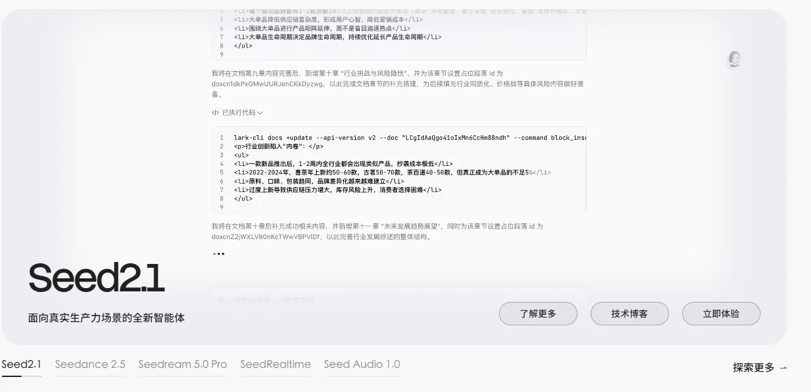

字节豆包字节跳动 · Seed 团队 · 火山引擎
国内 C 端与企业端的双料第一：豆包 App 月活 4.19 亿断层领先，豆包大模型日均调用 180 万亿 token、MaaS 份额 49.5%；Seed 团队覆盖文本、视频、图像、语音全模态，旗舰不开放权重。
一页结论
- 国内 C 端断层第一：豆包 App 9 月月活 4.19 亿，约为第二名千问的 2.6 倍，同比增长 143.6%S3
- 企业端用量第一：豆包大模型日均调用量 6 月达 180 万亿 token，两年增长 1,500 倍以上；火山引擎称国内企业每消耗两个 MaaS token 就有一个来自它S4
- 全模态模型矩阵：Seed 2.1（文本与 Agent）、Seedance 2.5（视频）、Seedream 5.0 Pro（图像）、SeedRealtime（实时语音）、Seed AudioS1
- 应用全线整合：TRAE、扣子并入豆包体系，豆包工作承接办公场景，飞书提供企业上下文S6
- 旗舰不开放：Hugging Face 上主要是研究型小模型，旗舰 Seed 2.1 闭源S2
01公司介绍
02公司战略
字节的打法是“C 端规模 + 企业用量 + 全模态”，用豆包拿用户、用火山引擎拿企业、用 Seed 做全栈模型。
- C 端规模优先：豆包 App 持续领跑，字节系多款 AI 应用同时上榜S3
- 企业 MaaS 用量第一：方舟平台推出 Coding Plan、Agent Plan 等订阅套餐S5
- 全模态：视频（Seedance）、图像（Seedream）、语音全面布局S1
- 办公整合：豆包工作 + 飞书 + TRAE + 扣子S6
- 兼容第三方模型：方舟平台也提供 DeepSeek、GLM 等模型S5
03模型矩阵与定位
| 模型 | 定位 | 价格 |
|---|---|---|
| Doubao Seed 2.1 Pro | 旗舰：面向真实生产力场景的智能体 | 输入 ¥6 / 输出 ¥30（每百万 token）S5 |
| Seed 2.1 Turbo / Seed-Code | 主力与编程 | TRAE 会员享 2.5 折S8 |
| Seedance 2.5 | 视频生成 | 按用量S1 |
| Seedream 5.0 Pro | 图像生成 | 按用量S1 |
| SeedRealtime / Seed Audio 1.0 | 实时语音、音频 | —S1 |
Seed 2.1 Pro 价格经媒体转述火山引擎官方文档；豆包专业版 C 端订阅 ¥68 / ¥200 / ¥500 每月三档S5。

04产品与 Agent 布局
应用层
豆包 App（月活 4.19 亿）豆包工作TRAE（编程）即梦（图像视频）豆包爱学
开发者平台
火山方舟 APICoding Plan / Agent Plan 订阅扣子智能体开发平台ArkClaw
模型层
Seed 2.1 Pro / Turbo / CodeSeedance 2.5、Seedream 5.0 ProSeedRealtime、Seed Audio
算力层
火山引擎数据中心
渠道抖音、今日头条等字节生态飞书火山引擎企业销售
豆包工作与 TRAE 的详细分析见《编程与办公智能体》系列。
05开放权重
| 模型 | 说明 |
|---|---|
| Seed-OSS-36B（2025）、Stable-DiffCoder-8B 等 | 研究型或中小模型开放S2 |
| Seed 2.1 旗舰 | 未开放权重 |
06商业模式
07上下游与渠道
上游：算力
火山引擎自建算力
字节豆包
Seed 模型、豆包、火山方舟
渠道
豆包 App 与字节生态火山引擎企业销售飞书企业客户
08用户与收入
09开发者口碑
10安全合规
11近期动态
12潜在风险分析意见
| 风险 | 表现 | 可能程度 |
|---|---|---|
| 价格战 | 国内 MaaS 价格持续下探，用量第一不等于利润第一（分析意见） | 中 |
| 海外拓展 | 海外业务面临合规与地缘限制（分析意见） | 中 |
| 算力 | 高端芯片出口管制 | 中 |
| 组织整合 | 多条产品线合并后的磨合S6 | 低 |
“可能程度”为基于现有公开信息的判断，不是量化预测。
13综合结论分析意见
优势
- 国内最大的 C 端 AI 用户池
- 企业 MaaS 用量第一
- 全模态模型
劣势
- 旗舰闭源
- 海外生态弱
机会
- 办公 Agent 与飞书协同
- 视频生成商业化
威胁
- 阿里、腾讯的追赶
- 价格战
对 AI 产品团队的启示
- 流量平台做 AI 有天然优势：字节把产品运营能力用在 AI 应用上，豆包与即梦等多款产品同时上榜。
- 用量规模本身是护城河：日均 180 万亿 token 让成本持续下降，又进一步压低价格。
- 全模态带来更多变现场景：视频与图像模型直接服务营销、电商等高价值行业。
- 订阅套餐降低开发者门槛：Coding Plan、Agent Plan 把按量计费变成可预期的月费。
信息缺口
以下信息未找到可靠的公开来源，本报告不做推测。
- 火山引擎与豆包的收入
- Seed 2.1 Pro 官方定价页原文（本报告价格来自媒体转述）
- Seed 2.1 的上下文长度与技术细节
- 海外版产品的用户规模
来源
A 官方 · B 权威媒体或第三方 · C 社区（仅用于口碑与线索）。访问日期均为 2026-11-02。
- S1 · AByteDance Seed 官网字节跳动
- S2 · AByteDance-Seed on Hugging FaceHugging Face
- S3 · BQuestMobile 2026 年 9 月 AI 原生 App 月活 TOP10腾讯新闻（快科技） · 2026-10-20
- S4 · B火山引擎总裁谭待：豆包大模型日均 Token 调用量达 180 万亿，市场份额升至 49.5%同花顺财经 · 2026-06-23
- S5 · BDoubao-Seed-2.1-pro 收费标准火山引擎开发者社区 · 2026-08-20
- S6 · BTRAE（汇总 2026-08 团队并入豆包等报道）百度百科
- S7 · B豆包大模型日均调用量突破 120 万亿新华网 · 2026-04-03
- S8 · ATRAE 中国版定价TRAE
- S9 · A豆包工作定价字节跳动
- S10 · BSeedance 2.5 正式发布爱范儿 · 2026